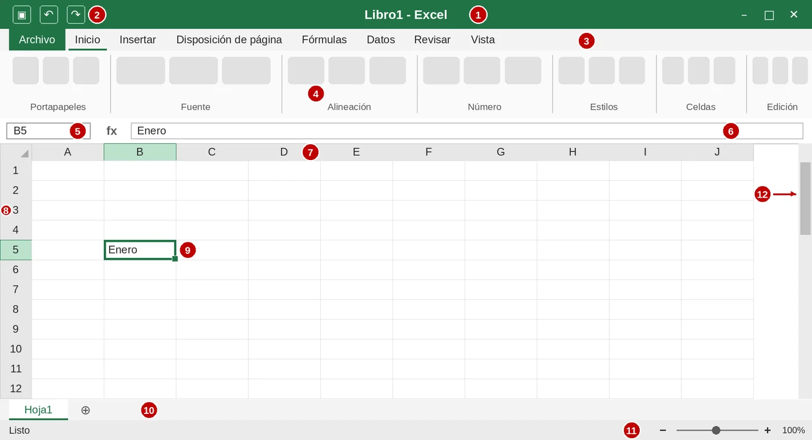
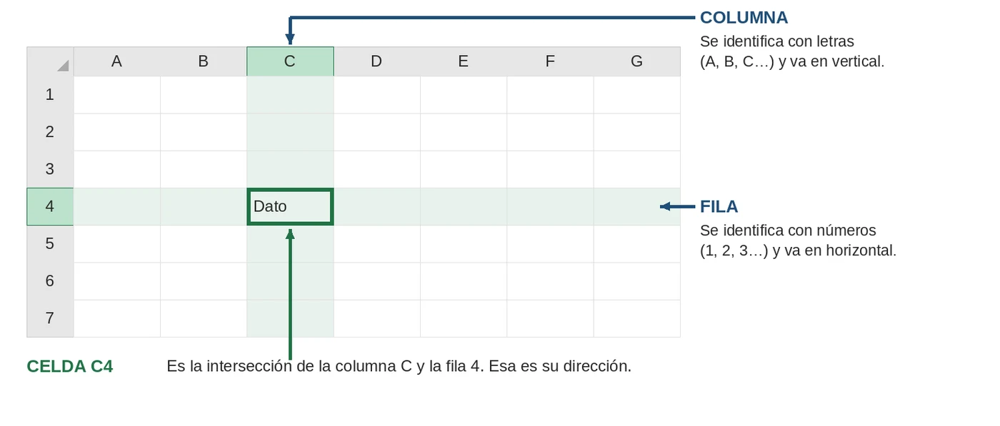
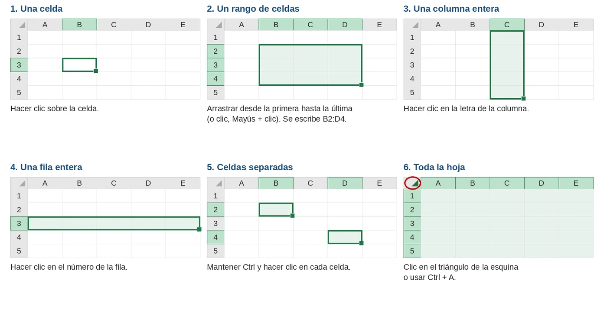
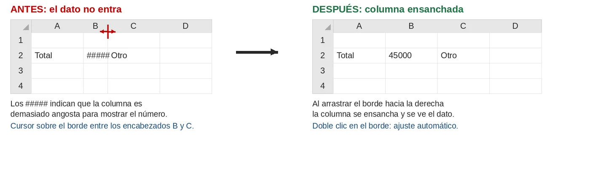
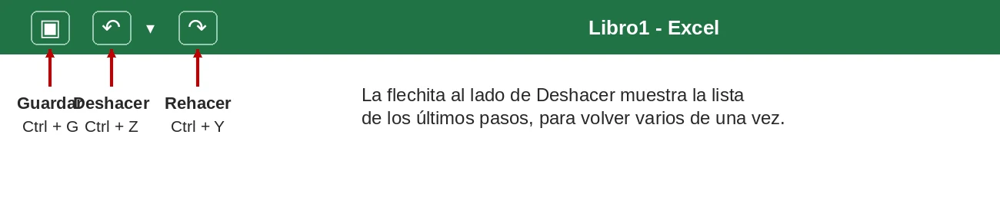
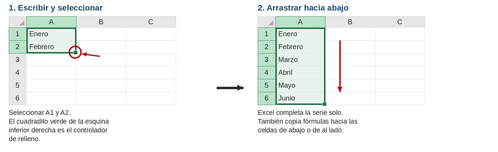
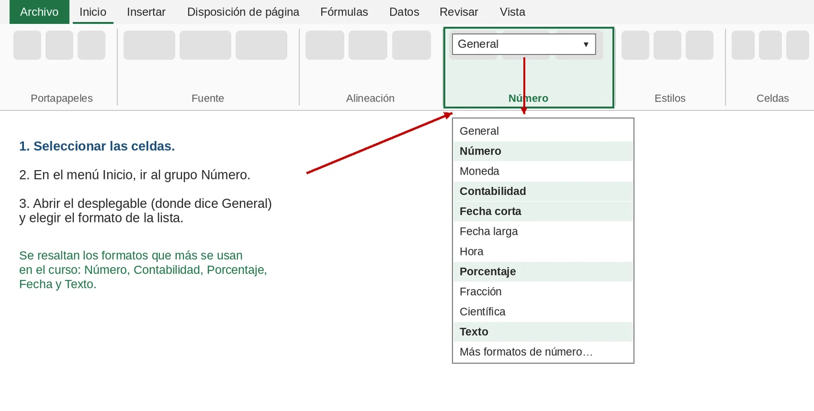

RECURSOS · GUÍA
Excel paso a paso: guía ilustrada
Guía para quienes recién empiezan con Excel. Explica cómo es la ventana, cómo se estructura una hoja, cómo seleccionar, cambiar el ancho de las columnas, aplicar formatos, deshacer y rehacer, entre otras acciones básicas. Sirve para leer y para consultar mientras se practica.
Sobre las imágenes: son ilustraciones esquemáticas, no capturas de pantalla. Excel puede verse un poco distinto según la versión (Excel 365, Excel 2016 o Excel para la Web), pero los nombres y los lugares de los botones son los mismos.
1La ventana de Excel
Al abrir Excel aparece una ventana con varias partes. Cada número de la imagen se corresponde con la tabla de abajo.

| N.º | Parte | Para qué sirve |
|---|---|---|
| 1 | Barra de título | Muestra el nombre del archivo y los botones para minimizar, maximizar y cerrar la ventana. |
| 2 | Barra de acceso rápido | Reúne botones de uso frecuente: Guardar, Deshacer y Rehacer. |
| 3 | Barra de menú | Tiene los menús Archivo, Inicio, Insertar, Fórmulas, Datos, entre otros. Al hacer clic en uno cambian las herramientas que se muestran debajo. |
| 4 | Cinta de opciones | Muestra las herramientas del menú elegido, agrupadas por tema (Portapapeles, Fuente, Alineación, Número, Estilos…). |
| 5 | Cuadro de nombres | Indica la dirección de la celda seleccionada (en la imagen, B5). |
| 6 | Barra de fórmulas | Muestra el contenido de la celda seleccionada y permite editarlo. |
| 7 | Encabezados de columnas | Las letras (A, B, C…) que identifican cada columna. |
| 8 | Encabezados de filas | Los números (1, 2, 3…) que identifican cada fila. |
| 9 | Celda activa | La celda seleccionada, con el borde verde grueso. Lo que se escribe va en ella. |
| 10 | Etiquetas de hojas | Un archivo de Excel (libro) puede tener varias hojas. El botón + agrega una hoja nueva. |
| 11 | Barra de estado | Está abajo de todo. Muestra información de las celdas seleccionadas (por ejemplo, la suma y el promedio) y permite cambiar el zoom. |
| 12 | Barras de desplazamiento | Sirven para moverse hacia abajo, arriba o a los costados de la hoja. |
2Cómo se estructura una hoja
Una hoja de cálculo es una gran tabla formada por columnas, filas y celdas.
- Columna: va en vertical y se identifica con letras (A, B, C…).
- Fila: va en horizontal y se identifica con números (1, 2, 3…).
- Celda: es el cuadrito donde se cruzan una columna y una fila. Es donde se escribe cada dato.
- Dirección de celda: se forma con la letra de la columna y el número de la fila. La celda de la columna C y la fila 4 es la C4.

Dato curioso: una hoja de Excel tiene 16.384 columnas (la última es la XFD) y 1.048.576 filas.
3Cómo seleccionar
Antes de dar formato, copiar o borrar, hay que seleccionar las celdas con las que se va a trabajar. Lo seleccionado se ve con un fondo verde claro. Para quitar la selección alcanza con hacer clic en otra celda.

| Qué se quiere seleccionar | Cómo |
|---|---|
| Una celda | Clic sobre la celda. |
| Un rango (varias celdas juntas) | Arrastrar desde la primera hasta la última, o clic en la primera, mantener Mayús y clic en la última. |
| Una columna o una fila | Clic en la letra de la columna o en el número de la fila. |
| Varias columnas o filas | Arrastrar sobre los encabezados. |
| Celdas que no están juntas | Mantener Ctrl y hacer clic en cada celda. |
| Toda la hoja | Clic en el triángulo de la esquina superior izquierda, o Ctrl + A. |
Rango: un rango es un grupo de celdas seleccionadas. Se nombra con la primera y la última celda separadas por dos puntos. Por ejemplo, B2:D4.
4Escribir, editar y borrar
- Escribir: seleccionar la celda y escribir. Enter confirma y baja a la celda de abajo; Tab confirma y pasa a la de la derecha.
- Editar: hacer doble clic sobre la celda, o seleccionarla y presionar F2, o modificar el contenido en la barra de fórmulas.
- Cancelar: Esc deja la celda como estaba antes de escribir.
- Borrar el contenido: seleccionar y presionar Supr.
- Reemplazar: si se escribe sobre una celda que ya tiene un dato, el dato anterior se pierde. Si fue un error, se puede deshacer (sección 6).
5Ancho de columnas y alto de filas
Cuando un número no entra en la columna, Excel muestra ##### en lugar del dato. El dato no se perdió: hay que ensanchar la columna.

- Arrastrando: ubicar el cursor sobre la línea que separa dos encabezados de columnas (el cursor se convierte en una flecha doble) y arrastrar hacia la derecha para ensanchar o hacia la izquierda para achicar.
- Ajuste automático: hacer doble clic sobre esa misma línea. La columna se ajusta sola al dato más largo.
- Medida exacta: clic derecho sobre la letra de la columna, elegir Ancho de columna, escribir el valor y Aceptar.
- Varias columnas a la vez: seleccionar varias columnas y cambiar el ancho de una: todas quedan iguales.
- Desde el menú: Inicio → Celdas → Formato → Autoajustar ancho de columna.
Con las filas se procede igual: se usa la línea que separa los números de fila y la opción Alto de fila.
6Deshacer y rehacer

- Deshacer (Ctrl + Z): anula la última acción. Se puede repetir varias veces para volver más atrás. La flechita al lado del botón muestra la lista de los últimos pasos.
- Rehacer (Ctrl + Y): vuelve a aplicar la acción que se acaba de deshacer.
Tener en cuenta: al cerrar el archivo ya no se pueden deshacer los cambios. Conviene probar y deshacer antes de guardar y cerrar.
7Copiar, cortar, pegar y autorrelleno
- Seleccionar la celda o el rango.
- Copiar (Ctrl + C) o cortar (Ctrl + X). Alrededor de lo copiado aparece un marco punteado.
- Hacer clic en la celda de destino.
- Pegar (Ctrl + V).
Copiar deja el dato en su lugar y lo repite en el destino. Cortar lo mueve. Para quitar el marco punteado, presionar Esc.
Autorrelleno: sirve para completar series (meses, días, números) o repetir fórmulas sin escribir todo. El controlador de relleno es el cuadradito verde de la esquina inferior derecha de la selección.

- Escribir Enero en A1 y Febrero en A2.
- Seleccionar ambas celdas.
- Arrastrar el controlador de relleno hacia abajo hasta donde se quiera completar.
8Los formatos
El formato cambia cómo se ve un dato, no el dato en sí. El número 45000 puede mostrarse como 45000, como 45.000,00 o como $ 45.000,00, y en todos los casos sigue siendo el mismo número para hacer cálculos. Por eso conviene escribir los números sin símbolos (sin $ ni %) y aplicar el formato después.

| Formato | Se escribe | Se ve | Para qué sirve |
|---|---|---|---|
| General | 45000 | 45000 | Es el formato por defecto. No tiene una estructura definida. |
| Número | 45000 | 45.000,00 | Cantidades. Permite elegir cuántos decimales mostrar. |
| Contabilidad | 45000 | $ 45.000,00 | Importes de dinero. El signo $ queda a la izquierda de la celda. |
| Porcentaje | 0,22 | 22% | Tasas y márgenes. Multiplica por 100 y agrega el símbolo %. |
| Fecha corta | 45000 | 15/03/2023 | Fechas. Excel guarda cada fecha como un número. |
| Texto | 00154 | 00154 | Códigos y datos que no se calculan. Conserva los ceros iniciales. |
Cómo aplicar un formato: seleccionar las celdas, ir a Inicio → Número, abrir el desplegable donde dice General y elegir el formato. En el mismo grupo hay botones directos para Contabilidad ($), Porcentaje (%), Millares (000) y para aumentar o disminuir decimales. También se puede hacer clic derecho y elegir Formato de celdas.
- Grupo Fuente: tipo y tamaño de letra, negrita, cursiva, color de letra, color de relleno y bordes.
- Grupo Alineación: izquierda, centro o derecha, y ajustar el texto dentro de la celda.
- Grupo Estilos: formato condicional, que cambia el color de una celda cuando se cumple una regla.
9Guardar y Guardar como
| Guardar | Guardar como | |
|---|---|---|
| Qué hace | Actualiza el archivo actual con los cambios. | Crea un archivo nuevo a partir del actual. |
| Nombre y lugar | Se mantienen. La primera vez, Excel los pide. | Se puede elegir otro nombre, otra ubicación u otro formato. |
| Archivo original | Se modifica. | Queda como estaba. |
Al guardar, Excel permite elegir entre Este equipo (guardado local) y OneDrive (en la nube). En Excel para la Web los cambios se guardan solos en OneDrive.
10Atajos útiles
| Atajo | Qué hace |
|---|---|
| Ctrl + C | Copiar. |
| Ctrl + X | Cortar. |
| Ctrl + V | Pegar. |
| Ctrl + Z | Deshacer. |
| Ctrl + Y | Rehacer. |
| Ctrl + A | Seleccionar toda la hoja. |
| Ctrl + G | Guardar (Excel en español). |
| F2 | Editar la celda seleccionada. |
| Supr | Borrar el contenido de la selección. |
| Esc | Cancelar lo que se está escribiendo. |
| Mayús + clic | Seleccionar un rango desde la celda activa hasta la que se hace clic. |
| Ctrl + clic | Seleccionar celdas que no están juntas. |
¿Y después? Para practicar formatos, porcentajes y funciones con ejercicios resueltos, seguí con Excel: formatos, porcentajes y funciones.
Material elaborado por Ruben Leal para el Bachillerato Tecnológico, en coordinación con la docente de Costos y Presupuestos Verónica Vaghi. Redactada y organizada con apoyo de inteligencia artificial (Claude, de Anthropic) a partir de los contenidos y el nivel definidos por el docente. Las ilustraciones son dibujos esquemáticos generados con código, no capturas de pantalla.